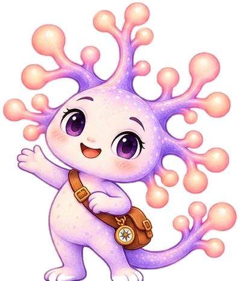
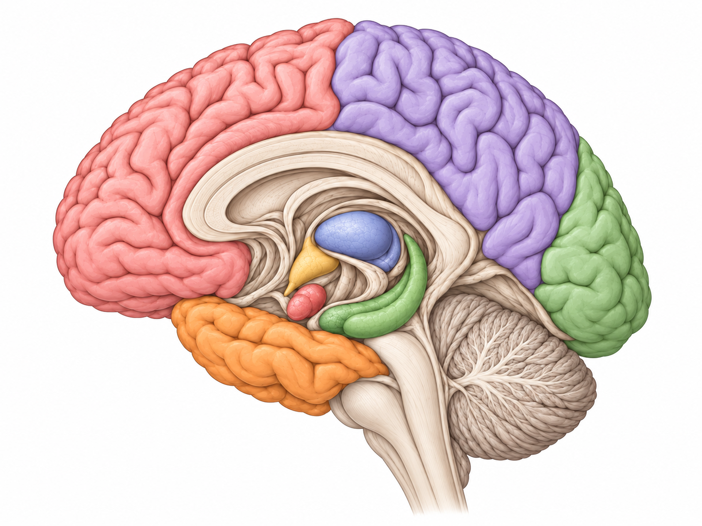
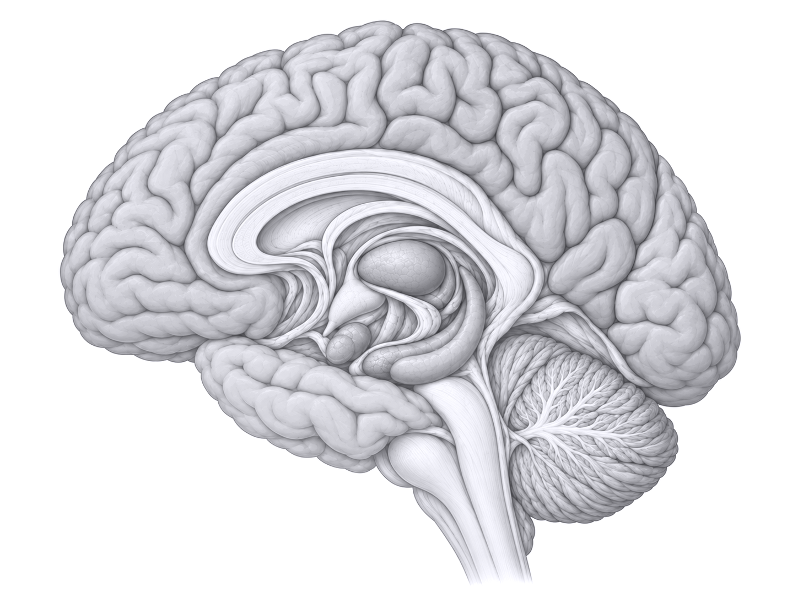
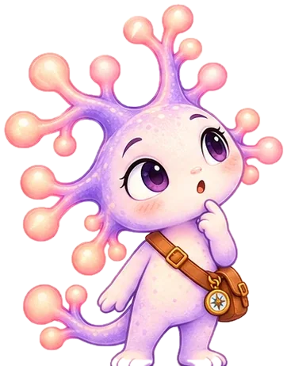
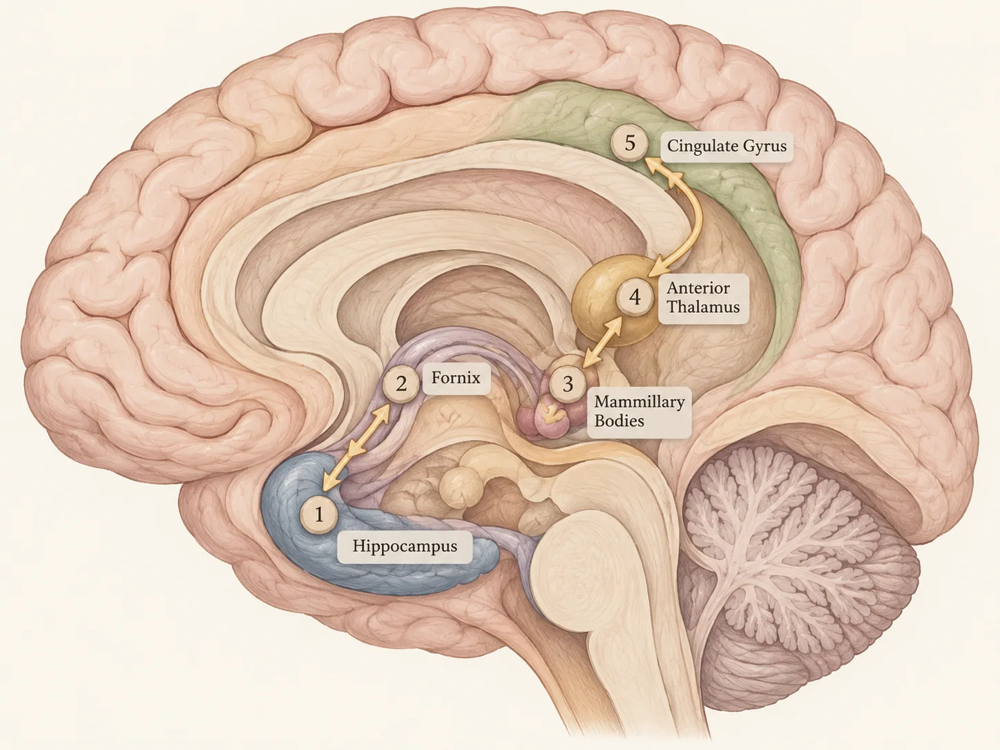

One connection
at a time.
Follow Neuri the neuron through the brain. Discover its landmarks, connect the pathways, and see how it all fits together.

Neuri’s journey map
Six little worlds to explore, one curious neuron to guide you. The Memory Garden is ready for your first adventure.
Practice and collect, whenever you like
These places are outside the story journey. Visit them any time, without affecting the order of your adventure.
Anatomy Park
Practice by labels or build it from pieces. The timer is optional and starts turned off.


Nothing completed yet · start your first round to earn stars, XP and notebook achievements.

Connect the Circuit
Help Neuri trace a simplified route through the Papez memory circuit. Choose the next structure in the chain.
A simplified teaching pathway, not a spatial brain map. The full Papez circuit includes additional links and is not a complete explanation of memory.
Which structure comes next?
Choose a structure to continue the journey.
The Memory Garden
Learn how each memory structure works, then put your understanding to the test.
How would you like to begin?
Follow Neuri through the story, or practice what you already know.
A reference map of the five main anatomical landmarks. You can return to it whenever you want to see the whole pathway.

Your brain atlas
Anatomical atlas by itayinbarr / Brain Project. Viewer code: Apache 2.0. Anatomy assets: CC BY-SA 4.0, credited to Z-Anatomy, BodyParts3D and DBCLS. The viewer is embedded from the original project; its controls and colors are maintained by its authors.
Neuri’s travel journal
A soft little record of everywhere you have wandered, what you have learned, and the treasures you have collected along the way.
A cozy map of your progress
This little journal keeps track of the places you have visited with Neuri, the anatomy practice you have completed, and the tiny discoveries you have picked up on the way.
Thank you for helping me find my way through the brain. Every mission, every puzzle, and every curious click adds another page to our shared journey. 🌷
- Current feelingA little curious and very cozy
- Travel companionNeuri the neuron
- Best way to use this pageHop between tabs whenever you want a quick recap
Journey log
Each chapter marks a little step forward in the adventure. Finished stops are tucked away here like stamps in a travel notebook.
Brain discoveries
These are the gentle reminders of what you have learned so far. Locked discoveries will open naturally as you keep playing.
Achievement keepsakes
Badges from the adventure and from the anatomy lab are kept here like little souvenirs from the trip.
Choose a badge to see how you earned it.
Adventure achievements
Earn badges by exploring Memory Garden and finishing the practice quiz.
Anatomy achievements
Badges unlocked in Anatomy Puzzle Lab are recorded here too.